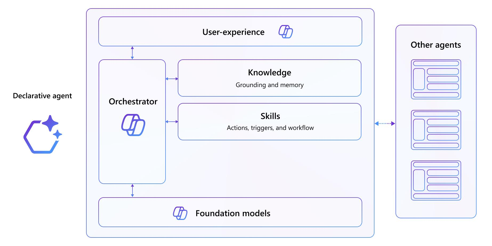

L300: Extending Microsoft 365
Build intelligent, context-aware agents that extend Microsoft 365 Copilot with custom knowledge, APIs, and multi-agent orchestration.
Introduction
Declarative agents are specialized, intelligent assistants built on Microsoft’s AI platform. They enable organizations to extend Microsoft 365 Copilot with domain-specific knowledge, custom APIs, and intelligent workflows—all without replacing the familiar Microsoft 365 experience.
This learning path takes you from building your first agent and API to orchestrating multiple agents that coordinate seamlessly to deliver unified, intelligent responses to complex business scenarios.
What you’ll build
You’ll progress through two comprehensive labs using the Microsoft 365 Agents Toolkit, building agents for two realistic scenarios:
- Trey Research — A consulting firm that needs to manage consultant profiles, project assignments, and delivery tracking through an AI-powered agent backed by a custom REST API.
- Zava Insurance — An insurance company automating their claims process with AI-powered agents that integrate with Model Context Protocol (MCP) servers, coordinate across specialized agents, and access real-time data from multiple sources. By the end, you’ll understand how to architect, build, and deploy production-ready agents that handle real-world complexity.
Duration
Estimated Time
- TechLab: MCP Server Integration and Connected Agents — 120 minutes
- Building Declarative Agents with TypeScript and Microsoft 365 Agents Toolkit — 180+ minutes
- Total — ~5 hours
Core technologies and tools
Microsoft 365 Agents toolkit
The primary development framework for building declarative agents. Provides:
- Scaffolding for agent projects (manifest files, API plugins, knowledge sources)
- Local debugging and testing via VS Code extension
- Integration with Microsoft 365 Copilot platform
Azure Functions and REST APIs
Backend APIs that power agent actions. In these labs, you’ll:
- Write Azure Functions in TypeScript
- Use Azurite storage emulator for local development
- Expose APIs via OpenAPI specifications
- Register APIs as Copilot plugins
Model Context Protocol (MCP)
A standardized protocol that lets AI agents securely access backend systems and data sources.
- Enables real-time data retrieval without indexing into Microsoft Graph
- Provides a “translator” between agents and enterprise systems
- Used in Lab 2 to bridge agents and claims management systems
Microsoft 365 platform integration
- SharePoint — Knowledge source for declarative agents
- Microsoft 365 Copilot — Foundational orchestrator and LLM infrastructure
- Microsoft 365 Admin Center — Connector configuration and management
- Microsoft 365 Search — Data discovery and retrieval
Development stack
- Language — TypeScript
- IDE — Visual Studio Code with Microsoft 365 Agents Toolkit extension
- Deployment — Azure (Functions, Storage, Connectors)
-
Testing — HTTP client (VS Code), MCP Inspector, direct Copilot prompts
Architecture
Declarative agent stack
At the foundation is Microsoft 365 Copilot, which provides:
- Foundational LLM (large language model)
- Unified orchestrator for routing and coordination
- Security controls and compliance infrastructure
- Consistent user experience across Microsoft 365
On top of this, you build:
- Custom Knowledge — SharePoint documents, connectors, Microsoft 365 data indexed for grounding
- Custom Actions — REST APIs (plugins) that let agents perform domain-specific operations
- Agent Manifest — Configuration defining your agent’s instructions, capabilities, conversation starters, and connected actions
- Intelligence Layer — Multi-agent orchestration (Lab 2) where specialized agents coordinate to solve complex scenarios
┌─────────────────────────────────────────┐ │ Declarative Agent (User Interface) │ │ - Instructions & Conversation Starters │ │ - Multi-Agent Orchestration (Lab 2) │ ├─────────────────────────────────────────┤ │ Knowledge & Actions │ │ - SharePoint Knowledge │ │ - API Plugins (REST APIs) │ │ - MCP Servers / Connectors │ ├─────────────────────────────────────────┤ │ Microsoft 365 Copilot (Platform) │ │ - Foundation Model & Orchestrator │ │ - Security, Compliance, Integration │ └─────────────────────────────────────────┘
Lab 1: API Plugin Architecture (TechLab)
Single agent + custom REST API + SharePoint knowledge:
Declarative Agent (Trey Genie)
↓
├─→ API Plugin (Azure Functions) → Azure Table Storage
└─→ SharePoint Knowledge (Copilot Connector)
Diagram

Lab 2: MCP + Multi-Agent Architecture (Declarative Agents)
Multiple coordinated agents + MCP server + knowledge sources:
Orchestrator Agent (Claims Router)
↓
├─→ Claims Agent ─→ MCP Server ─→ Claims Database
├─→ Contractors Agent ─→ SharePoint Knowledge
└─→ Procurement Agent ─→ Purchase Order Data
Learning outcomes
By completing this learning path, you’ll be able to:
Fundamentals (Lab 1)
- Build and run Azure Functions-based REST APIs locally
- Create declarative agents using the Microsoft 365 Agents Toolkit
- Register APIs as Copilot plugins via OpenAPI specifications
- Configure agent manifests with instructions, capabilities, and knowledge sources
- Integrate multiple knowledge sources (APIs + SharePoint) into a single agent Advanced (Lab 2)
- Understand and implement Model Context Protocol (MCP) servers
- Build agents that query backend systems via MCP without indexing data into Microsoft Graph
- Design multi-agent architectures with specialized agents and orchestrators
- Coordinate multiple agents to deliver unified responses to complex prompts
-
[ ] Deploy and test production-ready agent systems
Prerequisites
Before starting, ensure you have:
- Access to a Microsoft 365 tenant (or lab environment provided)
- Visual Studio Code with the Microsoft 365 Agents Toolkit extension
- Basic familiarity with TypeScript and REST APIs
- Understanding of JSON configuration files (manifests)
-
Familiarity with Azure services (Functions, Storage, admin portal)
Getting started
- Start with Lab 1: TechLab — Build your first agent and understand the fundamentals
- Progress to Lab 2 — Apply those skills to a more complex, real-world scenario
- Experiment — Modify the agent manifests, add new API endpoints, create your own agents Each lab includes detailed, hands-on exercises with step-by-step instructions, images, and success criteria.
Additional resources
- Microsoft 365 Agents Toolkit Documentation
- Model Context Protocol (MCP) Specification
- Microsoft 365 Copilot Platform Overview
-
Azure Functions Documentation
Ready to extend Microsoft 365? Start with Lab 1 below.